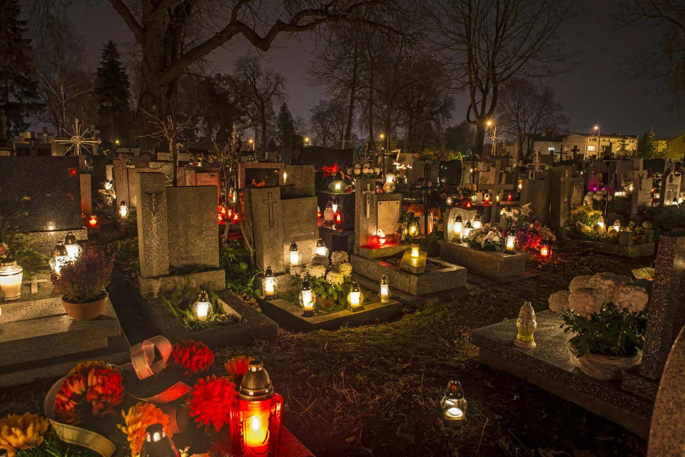

All Saint's DayNovember 1 |
|  |
Western churches observe All Saints' Day on November 1, and the first Sunday after Pentecost in Eastern churches. This special day honors all saints, known and unknown, who have attained in heaven. Additionally, this event is part of a three-day Christian tradition remembering the dead - this includes Hallooween on the 30th of October and All Soul's Day on the 2nd of November. Although the history of All Saint's Day cannot be traced with certainty, All Saint's Day on the Eastern church began on May 13 as a feast for martyrs. It was moved to November 1 by Pope Gregory III to honor all saints and martyrs. Pope Gregory IV later made it a widespread observance in 837. |
|
In the Philippines, All Saint's Day is also popularly referred to as "Undas". This holiday began in the Philippines during the Spanish colonial rule since Catholicism was practiced during that time and it taught Filipinos to honor the dead. This special day is a cherished tradition blending Catholic practices with Filipino customs. Moreover, it encourages Catholics to live with virtue, humility, and love - making the saints as role models. Over the years, the way this holiday is celebrated has evolved, but some acts still remain the same - lighting candles on the cemetery, clean and decorate graves, offer prayers, and many more. During these times, Filipinos go home to their provinces to visit their loved ones who have departed. |